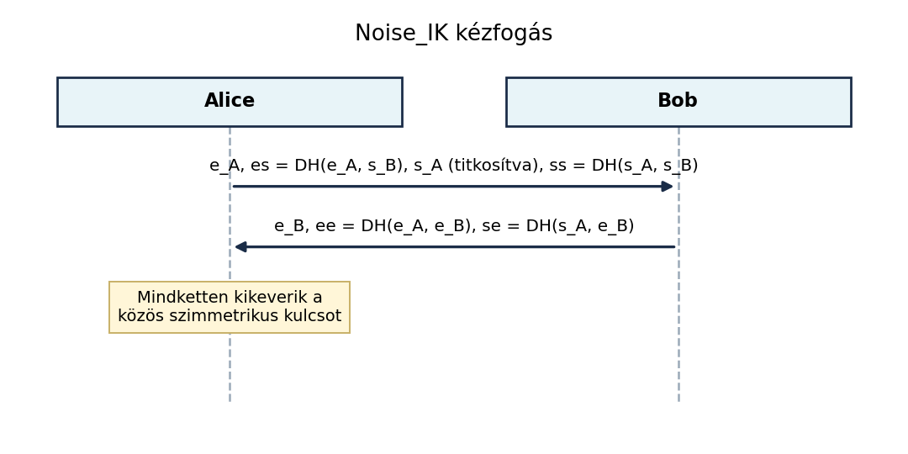

Amikor egy VPN-t vagy biztonságos csatornát tervezünk, a klasszikus megoldások – például az IPsec/IKEv2 vagy a TLS – évtizedek alatt hatalmasra nőttek: rengeteg algoritmus, kiterjesztés, tárgyalási üzenet és visszafelé kompatibilitási csomag található bennük. Ez a rugalmasság funkcionálisan kényelmes, kriptográfiai szempontból viszont támadási felület: a feleknek meg kell állapodniuk a primitívekben, és ha a támadó ezt a tárgyalást befolyásolja, downgrade-támadást hajthat végre – például rákényszerítheti a klienst egy gyenge, feltört algoritmus használatára. A WireGuard ezzel szemben egy radikálisan más filozófiát követ: nincs algoritmus-egyeztetés, minden primitív rögzített, és a protokoll a Noise-keretrendszer egyetlen, gondosan megválasztott kézfogásmintáját használja. Ebben az alfejezetben először a Noise mintanyelvet tanuljuk meg, majd megnézzük, hogyan lesz belőle a gyakorlatban is bevált, kernelben futó VPN-protokoll.
A Noise-kézfogás egy rövid üzenetváltás, amelyben a felek efemer és statikus Diffie–Hellman-kulcsaikat kombinálják. A következő diagram a Noise_IK minta két üzenetét (az „I” azt jelenti, hogy az iniciátor a statikus kulcsát azonnal elküldi, a „K” azt, hogy a válaszoló statikus kulcsát az iniciátor előre ismeri) mutatja:

A diagram azt mutatja, hogy Alice először elküldi az efemer nyilvános kulcsát (), elvégzi az DH-műveletet a Bob nyilvános statikus kulcsával (), majd titkosítva elküldi a saját statikus kulcsát (), és elvégzi az műveletet is. Bob válaszában elküldi az efemer kulcsát (), és elvégzi az és DH-műveleteket. A felek ezekből a DH-értékekből közös szimmetrikus kulcsot kevernek.
A Noise egy protokollkeretrendszer, nem egyetlen protokoll. Célja, hogy a Diffie–Hellman-alapú kézfogásokat tömör, elemezhető formában írja le. A keretrendszer alapötlete az, hogy a kézfogás lépéseit tokenekkel adjuk meg, amelyekből a felek automatikusan tudják, milyen üzenetet küldjenek, milyen DH-műveletet végezzenek, és hogyan frissítsék a közös szimmetrikus állapotot.
Definíció. (Noise tokenek) A Noise-kézfogásmintákban a következő tokenek használatosak:
A tokeneket üzenetenként soroljuk fel, a nyíl iránya pedig a küldőt
jelöli. Például a -> e, es, s, ss azt jelenti, hogy az
iniciátor küldi az
kulcsát, elvégzi az
DH-t, elküldi az
kulcsát (titkosítva), majd elvégzi az
DH-t. A <- e, ee, se válasz hasonló: a válaszoló elküldi
az efemer kulcsát, majd elvégzi az
és az
DH-t.
A szimmetrikus állapot. A Noise-protokollban a felek egy közös szimmetrikus állapotot tartanak fenn, amely egy úgynevezett keverő (mixer) lépéseken keresztül frissül. Amikor egy DH-érték keletkezik, azt egy hash-függvény segítségével hozzákeverik a korábbi állapothoz. Az így kapott állapotból származtatják a titkosító kulcsokat, az integritási kulcsokat és a további DH-műveletek titkosításához használt ideiglenes kulcsokat. Ez a mechanizmus garantálja, hogy a kézfogás minden lépése kumulatívan kötődjön az összes korábbi DH-titokhoz.
Az alábbi ábra a Noise_IK két üzenetén tokenenként követi a szimmetrikus állapot három elemét: a lánckulcsot, a átirat-hash-t és a titkosító kulcsot. A számok a lentebbi kidolgozott példa csoportjából származnak, Bob statikus titkos kulcsa itt (így nem kis rendű elem).
A WireGuard egy konkrét Noise-alapú protokoll, amely a
Noise_IKpsk2 mintát használja (teljes nevén
Noise_IKpsk2_25519_ChaChaPoly_BLAKE2s; a psk2
azt jelenti, hogy az opcionális előre megosztott kulcs a második üzenet
végén keveredik a kulcsba, így egy jövőbeli DH-törés ellen is plusz
védelmet adhat). A WireGuard azonban a Noise-keretrendszer által kínált
rugalmasságból szinte semmit nem használ ki: minden primitív
rögzített, és a protokoll nem tárgyal algoritmusokról.
A rögzített primitívek:
Ez a „nincs rugalmasság” tervezési döntés elsőre korlátozásnak tűnik, valójában azonban több fontos biztonsági előnyt ad:
Továbbvitt eredmény. A rögzített primitívek elve – amelyet itt a WireGuard kapcsán tanulunk meg – a Protokollszintű hibák: visszaminősítés, bemenetellenőrzés, kontextuskötés alfejezetben a downgrade-támadások elleni általános védekezésként, a Könyvtárválasztás, auditálás, tesztvektorok és fuzzing alfejezetben pedig az egyszerű, auditálható kód fontosságának indoklásaként tér vissza.
A WireGuard két további mechanizmust is tartalmaz, amelyek a kézfogást a gyakorlati hálózati támadásokkal szemben védik.
A Diffie–Hellman-kézfogás első üzenetének (Handshake Initiation) feldolgozása viszonylag költséges: a válaszolónak DH-műveleteket kell végeznie. Egy támadó hamis IP-címekről rengeteg ilyen üzenetet küldhet, és ezzel kimerítheti a szerver erőforrásait (distributed DoS). A WireGuard ezt a következő cookie-mechanizmussal védi ki:
mac1-et a
válaszoló nyilvános kulcsából számolt kulccsal (érvénytelen
mac1-re a válaszoló nem felel), a mac2-t egy
korábban kapott cookie-val.mac1-et nézi.
Terhelés alatt, ha a mac2 hiányzik vagy érvénytelen, a DH
helyett egy olcsó Cookie Reply üzenetet küld:
,
ahol
kétpercenként cserélődő titok; a cookie titkosítva (XChaCha20-Poly1305)
utazik.mac2-jét ezzel a
cookie-val számolja; ezt csak az tudja, aki a megadott IP-címen fogadni
is tud, így a hamisított forráscímű áradat kiszűrhető.Ezzel a támadónak először egy egyszerű, olcsó ellenőrzésen kell átmennie, mielőtt drága műveletet indítana.
A Handshake Initiation titkosított része egy TAI64N időbélyeget tartalmaz. A válaszoló peerenként tárolja a legnagyobb már elfogadott értéket, és eldob minden ennél nem nagyobb időbélyegű Initiationt, így egy rögzített Initiation nem játszható vissza (replay attack). Órák közötti tolerancia nincs, mert csak a monoton növekedést ellenőrzik. Az adatcsomagok visszajátszását külön, a 64 bites csomagszámlálón működő csúszó ablak szűri.
Vegyünk egy nagyon kis csoportot a Noise_IK kézfogás szemléltetésére. Legyen a prím és a generátor . A statikus kulcsok: Alice titkos kulcsa , Bob titkos kulcsa . Az efemer kulcsok ebben a kézfogásban: Alice , Bob .
A nyilvános kulcsok kiszámítása:
Most kövessük a Noise_IK lépéseit:
Mindkét fél ugyanazokat a DH-értékeket kapta:
,
,
,
(Pythonnal, pow-bal újraszámolva). A valódi Noise-protokoll
ezeket az értékeket egy hash-függvénnyel (például BLAKE2s) a
szimmetrikus állapotba keveri, és az eredményből származtatja a
titkosítási kulcsokat. A példában a kis prím miatt az értékek nem
biztonságosak, de a folyamatot jól mutatják.
Megjegyzés. A választás -t adna, amely 2-rendű elem: a vele képzett DH-érték csak lehet (kis részcsoport), ezért kerültük el; valós implementáció az ilyen nyilvános kulcsot elutasítja.
A WireGuard 2020 óta része a Linux-kernelnek (a 5.6-os verziótól), és elérhető Windowsra, macOS-re, iOS-re és Androidra is. Számos VPN-szolgáltató és vállalati megoldás alapeszköze lett, mert:
A mobil VPN-alkalmazások előnye, hogy a WireGuard képes a hálózatváltások (Wi-Fi → mobil adat) közötti gyors újracsatlakozásra, mert nincs állapotmegőrző tárgyalási fázis, és a kézfogás mindössze két üzenetváltásból áll.
Algoritmus-egyeztetés engedélyezése „rugalmasság” címén. Ha egy implementáció mégis tárgyalási lehetőséget ad hozzá, azonnal megnyílik a downgrade-támadás lehetősége. A WireGuard tervezői ezért utasították el a tárgyalást teljes egészében.
Cookie-mechanizmus kihagyása. Ha a szerver
terhelés alatt is minden Initiation üzenetre rögtön elvégzi a drága
DH-műveletet, akkor egy elosztott DoS-támadás könnyen kimerítheti a
CPU-t. A cookie-mechanizmus (mac2, Cookie Reply) nélkül a
WireGuard is sebezhető lenne ezzel szemben.
Az adatcsomag-számláló visszajátszás-ablakának kihagyása. A TAI64N időbélyeg csak az Initiation visszajátszását zárja ki; az adatcsomagok visszajátszását a 64 bites csomagszámlálón működő csúszó ablak szűri. Ha egy implementáció ezt elhagyja vagy túl szélesre állítja, a támadó rögzített adatcsomagokat játszhat vissza.
A kulcstörlés elhanyagolása. A Noise-protokollok biztonsága – különösen a forward secrecy – azon múlik, hogy a DH-titkokat és a belőlük származtatott szimmetrikus kulcsokat a munkamenet után töröljük. Ha egy implementáció a memóriában hagyja őket, egy későbbi memóriaolvasási támadás felhasználhatja azokat.
1. feladat (A)
Írd le a Noise tokenek (e, s, ee, es, se, ss) jelentését, és mondd meg,
melyik milyen típusú DH-műveletet jelöl.
2. feladat (A)
Adott a Noise_NK minta: <- s (előzetesen ismert) /
... / -> e, es / <- e, ee.
Melyik félnek van statikus kulcsa? Milyen hitelesítést és milyen
titkosságot ad?
3. feladat (B)
Tekintsük a kidolgozott példa paramétereit:
,
,
Alice statikus titkos kulcsa
,
Bob statikus titkos kulcsa
,
Alice efemer kulcsa
,
Bob efemer kulcsa
.
Számítsd ki az
DH-értéket Alice oldaláról indítva (vagyis
),
és ellenőrizd, hogy megegyezik-e azzal, amit Bob kap (Bob
értéke
).
4. feladat (B)
Magyarázd meg, miért véd a cookie-mechanizmus a DoS-támadások ellen, és
miért nem tudja a támadó egyszerűen hamisítani a cookie-t. Milyen titkos
kulcsra van szüksége a szervernek ehhez?
5. feladat (C)
Bizonyítsd be formálisan, hogy a Noise_IK kézfogásban a forward secrecy
tulajdonság teljesül abban az értelemben, hogy ha a hosszú távú statikus
kulcsok később kiszivárognak, a korábbi munkamenetek akkor sem fejthetők
vissza. Melyik DH-műveleteknek kell efemer kulcsot használniuk
ehhez?
6. feladat (D)
Tervezz egy egyszerű VPN-kézfogást a Noise-keretrendszerben, amelynek a
következő tulajdonságai vannak: (a) a szerver statikus kulccsal
rendelkezik, (b) a kliens anonim maradhat (nem küld statikus kulcsot),
(c) a minta ellenáll a passzív lehallgatásnak. Válassz egy megfelelő
Noise-mintát, és elemezd a lehetséges aktív támadásokat (például
közbeékelődés).
Önellenőrzés – válaszok
1. feladat (A)
A tokenek:
– efemer nyilvános kulcs küldése;
– statikus nyilvános kulcs küldése;
– DH a két fél efemer kulcsai között;
– DH a küldő efemer és a fogadó statikus kulcsa között;
– DH a küldő statikus és a fogadó efemer kulcsa között;
– DH a két fél statikus kulcsai között.
2. feladat (A)
Csak a válaszolónak (Bob) van statikus kulcsa, amelyet Alice előre
ismer. Az
=
DH(,
)
miatt csak Bob tudja feldolgozni Alice első üzenetét, és a második
üzenet sikeres AEAD-ellenőrzése hitelesíti Bobot. Alice anonim marad. A
forward secrecyt az
adja.
3. feladat (B)
Alice oldaláról:
.
Bob oldaláról:
.
A két érték megegyezik, ahogy a Diffie–Hellman tulajdonság
garantálja.
4. feladat (B)
A cookie egy MAC a kliens IP-címére és portjára, egy kétpercenként
cserélt titkos értékkel (időbélyeg nem kerül bele); a cookie titkosítva
utazik a Cookie Reply-ben. A támadó nem tudja hamisítani, mert nem
ismeri a titkot, és a rövid élettartam miatt nem is tudja
újrahasznosítani. Terhelés alatt a szerver csak akkor végzi el a drága
DH-műveletet, ha a mac2 érvényes cookie-val készült, így a
hamis IP-címekről érkező áradat hatástalan.
5. feladat (C)
A Noise_IK kézfogásban a munkamenetkulcs az
,
,
és
DH-értékekből keveredik össze. A forward secrecy azt jelenti, hogy a
statikus kulcsok későbbi kompromittálódása nem fedi fel a múltbeli
munkameneteket. Ha a statikus kulcsok kiszivárognak, az
,
és
DH-értékeket a támadó ki tudja számolni (mert ismeri a statikus
kulcsokat és a nyilvános efemer kulcsokat). Az
DH-érték azonban csak a két efemer titkos kulccsal számítható ki,
amelyeket a felek a munkamenet után töröltek. Ezért az
DH-titok ismerete nélkül a munkamenetkulcs nem rekonstruálható. Ez a
tulajdonság csak akkor teljesül, ha az efemer kulcsokat valóban törlik,
és az
DH-t is bele keverik a kulcsszármaztatásba.
6. feladat (D)
Megfelelő minta a Noise_NK: <- s / ... /
-> e, es / <- e, ee. A kliens a szerver
statikus kulcsát a konfigurációból ismeri; az
miatt csak a valódi szerver tudja feldolgozni az első üzenetet, és a
második üzenet érvényes AEAD-címkéje hitelesíti. A kliens nem küld
statikus kulcsot (anonim), az
forward secrecyt ad. Aktív támadó: a szerver kulcsa nélkül nem tud
érvényes második üzenetet készíteni, így a közbeékelés nem sikerül. Az
első üzenet hasznos tartalma visszajátszható, és a szerver statikus
kulcsának kompromittálódása esetén nem forward secret; ezért abban ne
utazzon érzékeny adat. Ha a szerver kulcsa nem ismert előre: Noise_NX
(-> e / <- e, ee, s, es), de akkor a
kliensnek a kapott kulcsot ellenőriznie kell (különben TOFU).
A Noise-keretrendszer tokenekkel
()
írja le a Diffie–Hellman-alapú kézfogásokat, és egy szimmetrikus
állapotgéppel keveri a DH-értékeket a közös kulcsba. A WireGuard a
Noise_IKpsk2 mintát használja, de minden primitívet rögzít:
Curve25519, ChaCha20-Poly1305, BLAKE2s és HKDF. A rögzített
primitívek elve – nincs algoritmus-egyeztetés – kizárja a
downgrade-támadásokat, csökkenti a kód méretét és megkönnyíti az
auditot. A WireGuard cookie-mechanizmussal
(mac1/mac2, Cookie Reply) véd a DoS-támadások
ellen: terhelés alatt a szerver csak érvényes cookie-val rendelkező
klienseknek végzi el a drága DH-műveletet. Az Initiation TAI64N
időbélyege (monoton ellenőrzéssel) és az adatcsomagok csúszó ablaka a
visszajátszásos támadásokat akadályozzák meg. A WireGuard 2020 óta a
Linux-kernel része, és mobil VPN-ekben is elterjedt. Továbbvitt
eredmény: a rögzített primitívek elve a Protokollszintű hibák: visszaminősítés,
bemenetellenőrzés, kontextuskötés és a Könyvtárválasztás, auditálás, tesztvektorok és
fuzzing alfejezetekben tér vissza; a ChaCha20-Poly1305 használata a
ChaCha20-Poly1305 és az AEAD-interfész
alfejezetre épül.
Az alfejezet a Noise-protokoll hivatalos specifikációjára
(noiseprotocol.org), a WireGuard whitepaperre
(wireguard.com/papers/wireguard.pdf), valamint a Curve25519
(RFC 7748), a ChaCha20-Poly1305 (RFC 8439) és a BLAKE2s (RFC 7693)
szabványaira támaszkodik. A pontos verziószámok, a Linux-kernelbe
integrálás időpontja (5.6, 2020) és a kódméretre vonatkozó állítások
ellenőrzést igényelnek a hivatalos forrásokban. A példákban használt kis
prímek kizárólag didaktikai célúak; valós rendszerben a WireGuard mindig
a fenti, szabványosított primitíveket használja.